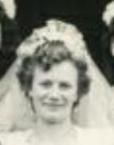

See also
- Henry STILTZ's parents: Johann Friederick STILTZ (1853-1900) and Anna Carolina FICKINGER (1861?-1921)
- Henry STILTZ's siblings: Anna Caroline STILTZ (1885-1947), Elizabeth STILTZ (1886-1930), Peter Frederick STILTZ (1887-1887), Matilda Gertrude STILTZ (1889-1919), Henry STILTZ (1899- ), Julia STILTZ (1894-1944), Margaret (Mick) STILTZ (1896-1965), Peter Frederick STILTZ (1897-1963), William Joseph STILTZ (1899- ) and Winifred Gertrude STILTZ (1909?- )
- Jewell DUNN's parents: Charles Litchfull DUNN (1853?-1936) and Mary Ann Edith WARREN (1854-1902)
- Jewell DUNN's siblings: Mary Ann DUNN (1877-1966), Alice DUNN (1879-1959), Charles Litchfield DUNN (1880-1962), Julia DUNN (1882-1883), Ernest DUNN (1884-1967), Frederick DUNN (1885-1955), William DUNN (1887-1970), Bertie DUNN (1888-1889), Henry DUNN (1896-1963) and Harry DUNN (1896?- )
Family of Henry Charles STILTZ and Jewell DUNN
Husband:
Henry Charles STILTZ (1891-1955)
Wife:
Jewell DUNN (1886-1975)
Children:
Marriage:
27 Mar 1916
Tottenham, Middlesex, England
Husband: Henry Charles STILTZ

Henry Charles STILTZ, 1945, age 53
Name:
Henry Charles STILTZ
Sex:
Male
Father:
Mother:
Birth:
13 Sep 1891
Deptford, Surrey, England
Census:
31 Mar 1901 (age 9)
Tottenham, Middlesex, England1
Address: Woodville Cottages, 3 Woodville Grove
Census:
2 Apr 1911 (age 19)
Tottenham, Tottenham, Middlesex, England2
Address: 86 Sleaford Road
Occupation:
2 Apr 1911 (age 19)
Butcher's Assistant; Tottenham, Tottenham, Middlesex, England2
Whether Employer, Worker, or Working on Own Account: Worker
Military Service:
frm 1915 to 1916 (age 23-25)
Army3
He served in the Royal Fusiliers as a Private (31754) and was awarded the Vistory Medal after the war (E/1/102 B/25 4200)
He also served in the Middlesex Regiment (G/44201)
Occupation:
1915 (age 23-24)
Butcher's Assistant for Stilwell & Sons3
His war record card records that he worked for Stilwell & Sons
Census:
19 Jun 1921 (age 29 yrs 6 mns)
Harringay, Middlesex, England4
Address: 54 Wightman Road
Occupation:
19 Jun 1921 (age 29)
Retail Butchers Shop Assistant; Harringay, Middlesex, England4
Employment: G. E. Churchley
Place of Work: 54 Wightman Road, Harringay, N4
Informant:
4 Feb 1923 (age 31)
Henry Charles STILTZ was informant on the birth certificate for Vera Jewell STILTS on 4 February 1923 in Tottenham, Middlesex, England5
Residence:
27 Feb 1923 (age 31)
Hornsey, Middlesex, England5
Address: 54 Wightman Road
Occupation:
27 Feb 1923 (age 31)
Butcher's Manager; Hornsey, Middlesex, England5
Name Change:
13 Jul 1933 (age 41)6
Occupation:
3 Sep 1945 (age 53)
Master Butcher7
Witness:
3 Sep 1945 (age 53)
Henry Charles STILTZ witnessed the marriage of George Emerson HOWELL and Vera Jewell STILTS on 3 September 1945 in Harringay, Middlesex, England7
Occupation:
1950 (age 58-59)
master butcher with his own shop
Residence:
21 Jan 1955 (age 63)
Southend on Sea8
Address: 30 Oakleigh Park Drive
Occupation:
21 Jan 1955 (age 63)
Master Butcher (retired); Southend on Sea8
Death:
21 Jan 1955 (age 63)
Rochford, Essex, England8
Cause: a Acute Peritonitis, b Coa Pulmonale c Chronic Brochitis Emphysema and Lung abcesses. Certified by Tecwyn Jones MB
Address: General Hospital
Wife: Jewell DUNN
Jewell DUNN, 1945, age 59
Name:
Jewell DUNN
Sex:
Female
Father:
Mother:
Birth:
5 Mar 1886
Islington, Middlesex, England
Census:
5 Apr 1891 (age 5)
Islington, Middlesex, England9
Address: 46 Caledonian Road
Occupation:
5 Apr 1891 (age 5)
Scholar; Islington, Middlesex, England9
Census:
31 Mar 1901 (age 15)
Islington, Middlesex, England10
Address: 18 Courtney Road
Census:
2 Apr 1911 (age 25)
Hornsey North, Hornsey, Middlesex, England11
Address: 2 Felix Avenue
Occupation:
2 Apr 1911 (age 25)
Butcher's Cashier; Hornsey North, Hornsey, Middlesex, England11
Whether Employer, Worker, or Working on Own Account: Worker
Census:
19 Jun 1921 (age 35 yrs 3 mns)
Harringay, Middlesex, England4
Address: 54 Wightman Road
Occupation:
19 Jun 1921 (age 35)
Home Duties; Harringay, Middlesex, England4
Residence:
27 Feb 1923 (age 36)
Hornsey, Middlesex, England5
Address: 54 Wightman Road
Residence:
21 Jan 1955 (age 68)
Southend on Sea8
Address: 30 Oakleigh Park Drive
Informant:
21 Jan 1955 (age 68)
Jewell DUNN was informant on the death certificate for Henry Charles STILTZ on 21 January 1955 in Rochford, Essex, England8
Residence:
25 Jan 1955 (age 68)
Southend on Sea8
Address: 30 Oakleigh Park Drive
Death:
17 Jun 1975 (age 89)
Newbury Park, Ilford, Essex, England
Address: King George's Hospital, Eastern Avenue
Child 1: Victor Henry STILTS
Name:
Victor Henry STILTS
Sex:
Male
Spouse:
Birth:
20 Jun 1920
Tottenham, Middlesex, England
Occupation:
Ambulance Driver
Census:
19 Jun 1921 (age 1 yr 0 mns)
Harringay, Middlesex, England4
Address: 54 Wightman Road
Witness:
17 Jun 1975 (age 54)
Victor Henry STILTS witnessed the death of Jewell DUNN on 17 June 1975 in Newbury Park, Ilford, Essex, England
Death:
22 Jan 1988 (age 67)
Tottenham, Middlesex, England
Child 2: Vera Jewell STILTS

Daughter: Vera Jewell STILTS, 1945, age 22

Name:
Vera Jewell STILTS
Sex:
Female
Spouse:
Birth:
4 Feb 1923
Tottenham, Middlesex, England5
Address: 11 Bruce Grove
Residence:
27 Feb 1923 (age 0)
Hornsey, Middlesex, England5
Address: 54 Wightman Road
Address:
1924 (age 0-1)
Harringay, Middlesex, England
Address: 54 Wightman Road
Occupation:
1939 (age 15-16)
Civil Servant in the Ministry of Food
Occupation:
frm 1945 (age 21-22)
Housewife
Residence:
3 Sep 1945 (age 22)
Harringay, Middlesex, England7
Address: 54 Wightman Road
Address:
frm 1948 to Oct 1951 (age 24-28)
Harringay, Middlesex, England
Address: 22 Umfreville Road
Address:
frm 1951 to 1971 (age 27-48)
Hainault, Ilford, Essex, England
Address: 4 Lancelot Road
Residence:
frm 1971 to 2003 (age 47-80)
Copthorne, Shrewsbury, Shropshire, England
Address: 66, Larkhill Road
Residence:
frm 2003 to 2020 (age 79-97)
Longden Coleham, Shrewsbury, Shropshire, England
Address: 23, Carline Crescent
Witness:
20 Jun 2016 (age 93)
Vera Jewell STILTS witnessed the death of George Emerson HOWELL on 20 June 2016 in Longden Coleham, Shrewsbury, Shropshire, England
Witness:
1 Jul 2016 (age 93)
Role as Witness Cremation of George HOWELL
Residence:
frm 3 Jul 2020 to 1 Dec 2020 (age 97)
Eaton Ford, St Neots, Cambridgeshire, England
Address: Nelson Lodge Care Home, Whinfell Close
Residence:
frm 1 Dec 2020 to 9 Jan 2021 (age 97)
Eaton Ford, St Neots, Cambridgeshire, England12
Address: Ford House, St Neots Road, Eaton Ford, St Neots, Cambridgeshire, England
Occupation:
9 Jan 2021 (age 97)
Housewife, Widow of George Emerson HOWELL; Eaton Ford, St Neots, Cambridgeshire, England12 13
Residence:
9 Jan 2021 (age 97)
Eaton Ford, St Neots, Cambridgeshire, England13
Address: Ford House, St Neots Road, Eaton Ford, St Neots, Cambridgeshire, England
Religion:
9 Jan 2021 (age 97)
CofE13
Occupation:
9 Jan 2021 (age 97)
Housewife, Widow of George Emerson HOWELL14
Death:
9 Jan 2021 (age 97 yrs 11 mns)
Cause: Dementia, Chronic Kidney Disease, Hypertension
Address: Ford House, St Neots Road, Eaton Ford, St Neots, Cambridgeshire, England
Cremation:
4 Feb 2021
Elms Farm, Bedford, Bedfordshire, England14
Address: Norse Road Cemetry
role=mourner: Gareth & Varina Howell, Tom Howell, Zoha Bennett, Jennifer Howell, Adam ireland, Nick Howell
Sources
- 1.
1901 Census Entry for 3 Woodville Bldgs, Woodville Grove, Tottenham, Middlesex, England, (RG13-1254-16-24). Custom Id: CENS-GB1901-ENG-MIDDX-3_Woodville_Blgs; Cit. Date: 31 March 1901. General Register Office, Kew.
- 2.
1911 Census Entry for 86 Seaford Road, Tottenham, Middlesex, England, (RG14-132-13-13-3). Custom Id: CENS-GB1911-ENG-MIDDX-86_Seaford_Road; Cit. Date: 2 April 1911. General Register Office, Kew.
- 3.
World War One Military Service record for Charles H Stiltz. Custom Id: MIL-ENG-1914-18-STILTZ_CHandF; Gareth Howell Archives.
- 4.
Census 1921 Harringay, Middlesex, England RG15 (Schedule 437), (RG15).
- 5.
Birth certificate of Vera Jewell Stilts, 4 February 1923, Gareth Howell Archives.
- 6.
Name change for Charles Henry STILTS. Cit. Date: 8 August 1933. Gareth Howell Archives.
- 7.
Marriage certificate of George Emerson HOWELL and Vera Jewell STILTS, 3 September 1945, Gareth Howell Archives.
- 8.
Death Rochford, Essex, England (General Hospital) 21 Jan 1955 Henry Charles STILTS, (334). Gareth Howell Archives.
- 9.
1891 Census Entry for 467 Caledonian Road, Islington, Middlesex, England, (RG12-162-78-15). Custom Id: CENS-GB1891-ENG-MIDDX-467_Caledonian_Road; Cit. Date: 5 April 1891. General Register Office, Kew.
- 10.
1901 Census Entry for 18 Courtney Road, Islington, Middlesex, Engand, (RG13-201-109-49). Custom Id: CENS-GB1901-ENG-MIDDX-18_Courtney_Road; Cit. Date: 31 March 1901. General Register Office, Kew.
- 11.
1911 Census Entry for 2 Felix Avenue, Crouch End, Middlesex, (RG14-132-20-20-1). Custom Id: CENS-GB1911-ENG-MIDDX-2_Felix_Avenue; Cit. Date: 2 April 1911. General Register Office, Kew.
- 12.
Death certificate of Vera J HOWELL, 9 January 2021, Gareth Howell Archives.
- 13.
2021 Death Certificate for Vera Jewell HOWELL (nee STILTS, (227). Custom Id: DEAT-ENG-CAMB-2021-STILTS_VERA; Gareth Howell Archives.
- 14.
2021 Cremation of vera Jewell HOWELL (nee STILTS). Custom Id: CREM-ENG-BEDS-2021-STILTS_Vera;